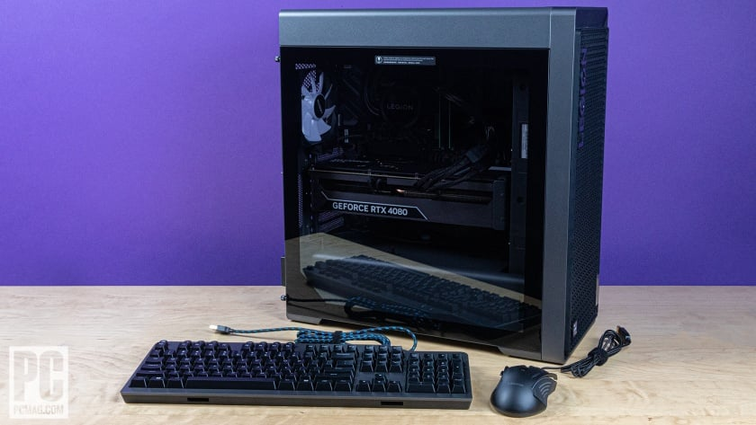

Interest and Hobbies
I'm interested in computers, basketball, guitars, Photoshop, Video games, Adobe Premier Pro and coding. Most of my interest stem from my passion in computers and music. Here is a list of these interests in more detail.
|

Basketball
Basketball is the sport I enjoy watching most and played throughout my life, It allowed me to stay fit and atheletic as a kid and gave me something to do when I was outside with my friends. My favorite player is Kobe Bryant, because of his tenacity and work ethic, he always preformed when he was on the court.

Computers
From a young age, computers fascinated me, sparking a curiosity that would weave through the fabric of my childhood. Building my first computer in the 6th grade was a pivotal moment; it transformed how I saw computers into something tangible and that I would enjoy as hobby for the rest of my life. This experience laid the foundation for a lifelong passion for technology and its potential to create, solve, and innovate..
Guitar
I picked up guitar as an interset when I first started listening to music incorperating the instrument. I wanted to try and play the things that I was hearing on scongs so I bought ny first guitar. It allows me to express myself in a musical way and gives me a platform to be creative on. Guitar allows me play things I never thought I could and serves as an endless grind of trying to get better at it.
Photoshop
Discovering Photoshop was like finding a magic wand for pictures. It was where I learned to play with colors, shapes, and turn ordinary photos into amazing ones. It was not just fun; it helped me be creative in a way I never knew I could.
Video Games
Video games have been my escape into fantastical worlds, where I've embarked on epic adventures, solved puzzles, and challenged my reflexes against players around the globe. They've not only been a source of entertainment but also a way to connect with friends and learn new skills through play.

Premier Pro
Premiere Pro opened up a world of storytelling for me. With every clip and cut, I learned to weave narratives, bringing life to stories through the rhythm of editing. It was more than software; it was a gateway to expressing ideas and crafting visual experiences.

Coding
Coding was like learning a secret language, one that turned lines of text into interactive programs and games. It cracked open a door to a world where I could build anything I could imagine, teaching me logic and creativity in equal measure.
|
{kind=link}